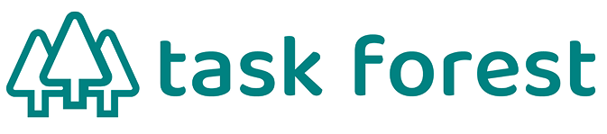

マニュアル不要
業務標準化ツール
「引き継ぎ」という、経営最大のリスクをゼロにする
担当者の突然の退職、急な休職、急な異動…
「あの人にしか分からない」という業務のブラックボックスを自動で効率化
各担当者の属人化の作業を全て可視化し、再現性のある仕組みへ
業務標準化ツール
自動派生・管理
の工数削減が可能
マニュアルがなく、担当者しか手順を知らない
ブラックボックス化状態やマニュアルを作る時間の確保もできず、業務がストップ！
本来の業務が回らず、クレームに繋がってしまう・・・

は客観的な視点から社内ノウハウを構造化し、解決策を提示します。
structure01
「担当者がいないと作業が止まる」最大の理由は、次に何をすべきかという「判断」の属人化が原因です。
task
forestは、一つの業務内容を指定すると、AIが関連する業務ややるべきタスクを自動で展開してくれます。前任者や担当者の頭の中で行っている「段取り」を可視化し、誰でも「見たらすぐ分かる」状態を即座に作り出します。

structure02
日々の実務をtask forest上でこなすだけで、そのプロセスが「タスクテンプレート」として自動的にパッケージ化。個人のスキルに依存していたパターンが、組織全体の「再現性のある仕組み」へと昇華。担当者しか知らないブラックボックスを解消し、誰が担当しても同じ品質でアウトプットを出せる環境として整えます。

structure03
組織AIが各実務のルールや過去の対応ログを学習し、誰が利用しても(インプット)、高品質でクオリティの高い処理で「その会社にとっての最適解」を提示(アウトプット)します。また、様々な利用シーンにおいて「使用者の知恵と方法」への処理が統一された状態でフォーマットとして登録されます。
「担当者しか手順を知らない」状態は、業務ストップの引き金です。task forestなら、例えば「月次決算」と1つ打つだけで、AIが過去の作業データから必要な工程を網羅的に「展開」させて一覧表示。熟練者の頭の中にある複雑な手順をその場で「具現化」します。
マニュアル作成のために進行中の作業を止める必要はありません。普段の業務をこなすだけで、その工数・ルール・手順が「タスクテンプレート」として自動的にパッケージ化されます。これは単なる記録ではなく、貴社だけの「再現性のある仕組み」として各担当者の「隠れたファインプレー」を可視化し、組織全体の共有資産としてデータベース化します。
担当者の離脱が「業務の死」であってはなりません。task forestに蓄積された手順は、担当者が変わっても組織AIの中に生き続けます。後任者はログインした瞬間からAIのガイドに従って「見たらすぐ分かる」状態で作業を開始。引き継ぎ時間が取れない急な欠員や移動の際も、顧客対応が止まることなく、業績低下のリスクを鉄壁の守りで防ぎます。
Task Forestで実務を回し始めると、誰がどの作業にどれだけの時間を費やしているかがすべて数値データとして可視化されます。これまで「なんとなく」やっていた慣習的な業務や、重複している確認工程が客観的に浮き彫りになるため、経験や勘に頼らない、データに基づいた本質的な業務の整理・断捨離が可能になります。

FLOW
本運用まで簡単 4 ステップ
お問い合わせ

まずは現状の課題をヒアリングします。特定の担当者に依存している「ブラックボックス業務」はどこか、どの業務が止まると最も大きなダメージ（クレーム等）に繋がるかを特定。最短で資産化すべき優先順位を決定します。
ヒアリング/
初期設定

Task Forestのマニュアル（10.5項）に基づき、貴社専用の「組織AI」をセットアップします。
既存のTODOや業務フローを読み込ませるだけで、AIが貴社のルールを学習。熟練者の「判断基準」をデジタル上に再現し、「見たらすぐ分かる」手順（タスクテンプレート）を具現化します。
トライアル開始

実際の現場で1ヶ月間、フル機能をお試しいただきます。普段通り業務をこなすだけで、AIが「最適な業務効率」を自動提案。「急な欠員」を想定した模擬テストなども行い、担当者が不在でもAIのガイドだけで業務が完結する驚きを体感してください。
本運用

全社的な運用を開始します。日々の実務がそのまま「組織の知恵」として蓄積され続けるため、使えば使うほど会社が強く、安定していきます。退職や異動のリスクに怯えることなく、社長が本来の「経営判断」に集中できる環境が完成します。
FAQ
A
はい。数名のチームから大企業まで柔軟に使えるのが特徴です。はい。数名のチームから大企業まで柔軟に使えるのが特徴です。はい。数名のチームから大企業まで柔軟に使えるのが特徴です。はい。数名のチームから大企業まで柔軟に使えるのが特徴です。
A
はい。数名のチームから大企業まで柔軟に使えるのが特徴です。はい。数名のチームから大企業まで柔軟に使えるのが特徴です。はい。数名のチームから大企業まで柔軟に使えるのが特徴です。はい。数名のチームから大企業まで柔軟に使えるのが特徴です。
A
ダミー回答です。セクションごとに内容を差し替えてください。ダミー回答です。セクションごとに内容を差し替えてください。ダミー回答です。セクションごとに内容を差し替えてください。ダミー回答です。セクションごとに内容を差し替えてください。
A
ダミー回答です。想定機能に合わせて記載してください。ダミー回答です。想定機能に合わせて記載してください。ダミー回答です。想定機能に合わせて記載してください。ダミー回答です。想定機能に合わせて記載してください。
A
ダミー回答です。想定機能に合わせて記載してください。ダミー回答です。想定機能に合わせて記載してください。ダミー回答です。想定機能に合わせて記載してください。ダミー回答です。想定機能に合わせて記載してください。
A
ダミー回答です。想定機能に合わせて記載してください。ダミー回答です。想定機能に合わせて記載してください。ダミー回答です。想定機能に合わせて記載してください。ダミー回答です。想定機能に合わせて記載してください。
「担当者がいないと分からない」という不安、
今日で終わりにしませんか？
（※貴社の業務に合わせた「属人化リスク診断＆シミュレーション」を無料作成）
FORM
引き継ぎ準備40時間を0時間に、新人の即戦力化を3倍速める。
貴社の業務状況に合わせて、最適な効率化プランをシミュレーションいたします。
まずは1ヶ月、その効果をご体感ください。